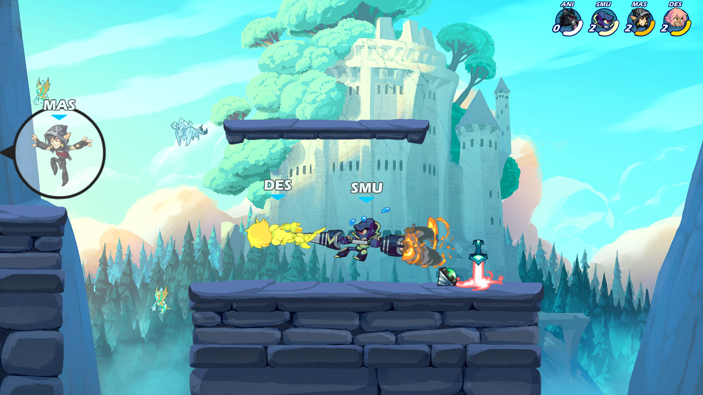

Regras da cruzinha gay:
para mudar uma regra é preciso 6 votos a favor (em 8)
tem de haver no mínimo 4 jogadores
se houver DC é preciso esperar (não atacar o bot nem outro jogador);
se não se esperar, o jogador que morre pode escolher cancelar o jogo
se não reconectar em 1 minuto ou faltar 3 minutos para acabar o jogo,
este recomeça com as vidas e o tempo certos
só conta para a competição jogos no modo clássico
têm direito a votar uma nova regra os seguintes jogadores:
Ferreira, Tommy, Cruz, Martim, Fadez, Boss, Rabo e Master

Classifiquie a gayzice:
Voltar a home page